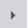

Initiating an Incident
Perform either of the procedures to initiate an incident from an incident template/notification template/easy buttons, or by using command.
Initiate an Incident from an Incident Template/Notification Template/Easy Buttons
- The incident to be initiated is created in Notification > Incident Templates.
- The notification to be launched is available in Notification > Notification Templates.
- The recipients or recipient groups are assigned to the notification template to be launched.
- In System Browser, Application View is selected.
- Perform any of the steps to initiate an incident using either of the following:
- [Notification Templates] Select Applications > Notification > Notification Templates. A list of available notification templates folders and message templates display below the Notification Templates node.
- [Incident Templates] Select Applications > Notification > Incident Templates. A list of available incident templates folders, incident templates display below the Incident Templates node.
- Select the notification template, incident template, or easy button from which you want to initiate the incident.
- The incident progress, launch group details (with the associated notifications), and incident details displays under Initiate Incident tab.
- In the Selected Notifications section, do the following:
a. Click the incident to view its details.
b. Select the launch group under which the incident must be initiated.
c. (Optional) Drag and drop notifications to the selected launch group from the Notification Templates node in the System Browser. Click the notification to view and edit its details. For more information, see Editing a Message Template Before Launch. - In the Progress section, do one of the following:
- If the progress bar has reached 100 percent, follow the next step.
- If the progress bar is less than 100 percent, click Next.
NOTE: Progress is less than 100 percent when certain details in the associated notification template are not met. - The Message Details and Message Content displays.
- Check for the
 symbol, and enter the required details in the respective fields.
symbol, and enter the required details in the respective fields. - (Applicable only when you are initiating an Incident from a Notification Template) Expand the Incident Details expander and do the following:
a. Ensure that the Initiate new ad-hoc incident option is selected by default.
b. Click either Launch under existing incident or Copy from Incident Template and select an incident from the drop-down list.
c. Enter the language-specific incident name and description.
d. Select the type of incident from the Type drop-down list. - The Incident Structure expander displays.
- Click Initiate.
- The incident is initiated.
Initiate an Incident using Command
- Select Applications > Notification > Incident Templates.
- Select the configured incident template to be initiated.
NOTE: The incident template should be configured with one start launch group and message templates. The message template may contain system and event variables but no user variable. - Click the Extended Operation tab and do one of the following:
- If the selected incident template does not contain a user variable, in the Initiate Incident expander, click Initiate.
- If the selected incident template contains a user variable, in the Initiate Incident expander, enter the variable text in the Variable Value field and click Initiate.
- The selected incident template is initiated.
Initiate an Incident from the Event List
- Starting Mode should be Manual or Auto with Delay option configured.
- Select Applications > Notification > Incident Templates.
- Select the configured incident template to be initiated.
- The incident template is triggered through an event.
- In the Summary Bar, go to the event list.
- Select

against the event to launch the incident. - The incident is launched.
- Select
 to close the incident.
to close the incident. - The incident is closed.